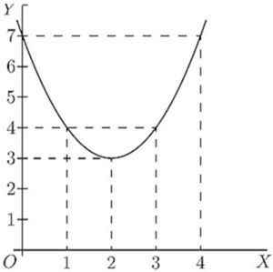
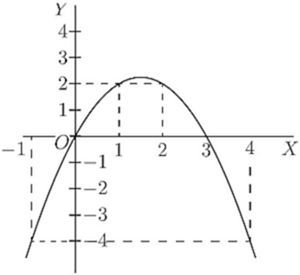
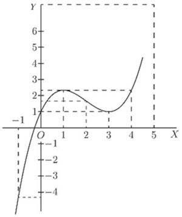
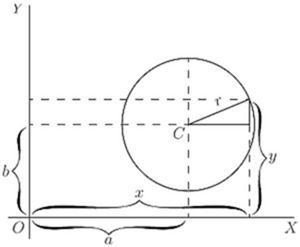
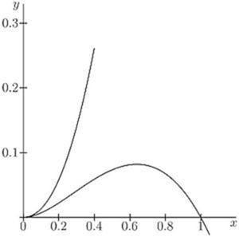

Chapter 13: Chapter XI. Maxima and Minima¶
13.1 Chapter XI. Maxima and Minima¶
ONE of the principal uses of the process of differentiating is to find out under what conditions the value of the thing differentiated becomes a maximum, or a minimum. This is often exceedingly important in engineering questions, where it is most desirable to know what conditions will make the cost of working a minimum, or will make the efficiency a maximum.
Now, to begin with a concrete case, let us take the equation
By assigning a number of successive values to  , and finding the corresponding values of
, and finding the corresponding values of  , we can readily see that the equation represents a curve with a minimum.
, we can readily see that the equation represents a curve with a minimum.
|
0 | 1 | 2 | 3 | 4 | 5 |
|---|---|---|---|---|---|---|
|
7 | 4 | 3 | 4 | 7 | 12 |
These values are plotted in Fig. 26, which shows that has apparently a minimum value of 3, when is made equal to 2. But are you sure that the minimum occurs at 2, and not at or at ?

Of course it would be possible with any algebraic expression to work out a lot of values, and in this way arrive gradually at the particular value that may be a maximum or a minimum.

Here is another example:
Let
Calculate a few values thus:
|
-1 | 0 | 1 | 2 | 3 | 4 | 5 |
|---|---|---|---|---|---|---|---|
|
-4 | 0 | 2 | 2 | 0 | -4 | -10 |
Plot these values as in Fig. 27.
It will be evident that there will be a maximum somewhere between  and
and  ; and the thing looks as if the maximum value of ought to be about . Try some intermediate values. If ; if ; if . How can we be sure that 2.25 is the real maximum, or that it occurs exactly when ?
; and the thing looks as if the maximum value of ought to be about . Try some intermediate values. If ; if ; if . How can we be sure that 2.25 is the real maximum, or that it occurs exactly when ?
Now it may sound like juggling to be assured that there is a way by which one can arrive straight at a maximum (or minimum) value without making a lot of preliminary trials or guesses. And that way depends on differentiating. Look back to an earlier page (78) for the remarks about Figs. 14 and 15, and you will see that whenever a curve gets either to its maximum or to its minimum height, at that point its  . Now this gives us the clue to the dodge that is wanted. When there is put before you an equation, and you want to find that value of that will make its a minimum (or a maximum), first differentiate it, and having done so, write its
. Now this gives us the clue to the dodge that is wanted. When there is put before you an equation, and you want to find that value of that will make its a minimum (or a maximum), first differentiate it, and having done so, write its  as equal to zero, and then solve for . Put this particular value of into the original equation, and you will then get the required value of . This process is commonly called "equating to zero."
as equal to zero, and then solve for . Put this particular value of into the original equation, and you will then get the required value of . This process is commonly called "equating to zero."
To see how simply it works, take the example with which this chapter opens, namely
Differentiating, we get: Now equate this to zero, thus: Solving this equation for , we get:
Now, we know that the maximum (or minimum) will occur exactly when .
Putting the value into the original equation, we get
Now look back at Fig. 26, and you will see that the minimum occurs when , and that this minimum of .
Try the second example (Fig. 24), which is
Differentiating, .
Equating to zero, and putting this value of into the original equation, we find: This gives us exactly the information as to which the method of trying a lot of values left us uncertain.
Now, before we go on to any further cases, we have two remarks to make. When you are told to equate  to zero, you feel at first (that is if you have any wits of your own) a kind of resentment, because you know that has all sorts of different values at different parts of the curve, according to whether it is sloping up or down. So, when you are suddenly told to write you resent it, and feel inclined to say that it can't be true. Now you will have to understand the essential difference between "an equation," and "an equation of condition." Ordinarily you are dealing with equations that are true in themselves, but, on occasions, of which the present are examples, you have to write down equations that are not necessarily true, but are only true if certain conditions are to be fulfilled; and you write them down in order, by solving them, to find the conditions which make them true. Now we want to find the particular value that has when the curve is neither sloping up nor sloping down, that is, at the particular place where . So, writing does not mean that it always is
to zero, you feel at first (that is if you have any wits of your own) a kind of resentment, because you know that has all sorts of different values at different parts of the curve, according to whether it is sloping up or down. So, when you are suddenly told to write you resent it, and feel inclined to say that it can't be true. Now you will have to understand the essential difference between "an equation," and "an equation of condition." Ordinarily you are dealing with equations that are true in themselves, but, on occasions, of which the present are examples, you have to write down equations that are not necessarily true, but are only true if certain conditions are to be fulfilled; and you write them down in order, by solving them, to find the conditions which make them true. Now we want to find the particular value that has when the curve is neither sloping up nor sloping down, that is, at the particular place where . So, writing does not mean that it always is  ; but you write it down as a condition in order to see how much will come out if is to be zero.
; but you write it down as a condition in order to see how much will come out if is to be zero.
The second remark is one which (if you have any wits of your own) you will probably have already made: namely, that this much-belauded process of equating to zero entirely fails to tell you whether the that you thereby find is going to give you a maximum value of or a minimum value of . Quite so. It does not of itself discriminate; it finds for you the right value of but leaves you to find out for yourselves whether the corresponding is a maximum or a minimum. Of course, if you have plotted the curve, you know already which it will be.
For instance, take the equation:
Without stopping to think what curve it corresponds to, differentiate it, and equate to zero: whence and, inserting this value, will be either a maximum or else a minimum. But which? You will hereafter be told a way, depending upon a second differentiation, (see Chap. XII., p. 109). But at present it is enough if you will simply try any other value of differing a little from the one found, and see whether with this altered value the corresponding value of is less or greater than that already found.
Try another simple problem in maxima and minima. Suppose you were asked to divide any number into two parts, such that the product was a maximum? How would you set about it if you did not know the trick of equating to zero? I suppose you could worry it out by the rule of try, try, try again. Let 60 be the number. You can try cutting it into two parts, and multiplying them together. Thus, 50 times 10 is 500; 52 times 8 is 416; 40 times 20 is 800; 45 times 15 is 675; 30 times 30 is 900. This looks like a maximum: try varying it. 31 times 29 is 899, which is not so good; and 32 times 28 is 896, which is worse. So it seems that the biggest product will be got by dividing into two equal halves.
Now see what the calculus tells you. Let the number to be cut into two parts be called  . Then if is one part, the other will be , and the product will be or . So we write . Now differentiate and equate to zero; Solving for , we get .
. Then if is one part, the other will be , and the product will be or . So we write . Now differentiate and equate to zero; Solving for , we get .
So now we know that whatever number may be, we must divide it into two equal parts if the product of the parts is to be a maximum; and the value of that maximum product will always be .
This is a very useful rule, and applies to any number of factors, so that if a constant number, is a maximum when .
Test Case.
Let us at once apply our knowledge to a case that we can test.
Let and let us find whether this function has a maximum or minimum; and if so, test whether it is a maximum or a minimum.
Differentiating, we get
Equating to zero, we get whence or
That is to say, when is made , the corresponding value of will be either a maximum or a minimum. Accordingly, putting in the original equation, we get
Is this a maximum or a minimum? To test it, try putting a little bigger than  ,—say make . Then which is higher up than -0.25; showing that is a minimum.
,—say make . Then which is higher up than -0.25; showing that is a minimum.
Plot the curve for yourself, and verify the calculation.
Further Examples.
A most interesting example is afforded by a curve that has both a maximum and a minimum. Its equation is: Now

Equating to zero, we get the quadratic, and solving the quadratic gives us two roots, viz.
Now, when ; and when . The first of these is a minimum, the second a maximum.
The curve itself may be plotted (as in Fig. 28) from the values calculated, as below, from the original equation.
|
-1 | 0 | 1 | 2 | 3 | 4 | 5 | 6 |
|---|---|---|---|---|---|---|---|---|
|
1 | 1 | 19 |
A further exercise in maxima and minima is afforded by the following example:
The equation to a circle of radius  , having its centre
, having its centre  at the point whose coordinates are , as depicted in Fig. 29, is:
at the point whose coordinates are , as depicted in Fig. 29, is:

This may be transformed into
Now we know beforehand, by mere inspection of the figure, that when  , will be either at its maximum value, , or else at its minimum value, . But let us not take advantage of this knowledge; let us set about finding what value of will make a maximum or a minimum, by the process of differentiating and equating to zero. which reduces to
, will be either at its maximum value, , or else at its minimum value, . But let us not take advantage of this knowledge; let us set about finding what value of will make a maximum or a minimum, by the process of differentiating and equating to zero. which reduces to
Then the condition for being maximum or minimum is:
Since no value whatever of will make the denominator infinite, the only condition to give zero is
Inserting this value in the original equation for the circle, we find and as the root of is either or , we have two resulting values of ,
The first of these is the maximum, at the top; the second the minimum, at the bottom.
If the curve is such that there is no place that is a maximum or minimum, the process of equating to zero will yield an impossible result. For instance:
Let
Then
Equating this to zero, we get , Therefore has no maximum nor minimum.
A few more worked examples will enable you to thoroughly master this most interesting and useful application of the calculus.
(1) What are the sides of the rectangle of maximum area inscribed in a circle of radius  ?
?
If one side be called , and as the diagonal of the rectangle is necessarily a diameter, the other side .
Then, area of rectangle ,
If you have forgotten how to differentiate , here is a hint: write and , and seek and  ; fight it out, and only if you can't get on refer to page 66.
; fight it out, and only if you can't get on refer to page 66.
You will get
For maximum or minimum we must have that is, and .
The other side ; the two sides are equal; the figure is a square the side of which is equal to the diagonal of the square constructed on the radius. In this case it is, of course, a maximum with which we are dealing.
(2) What is the radius of the opening of a conical vessel the sloping side of which has a length  when the capacity of the vessel is greatest?
when the capacity of the vessel is greatest?
If be the radius and the corresponding height, .
Proceeding as in the previous problem, we get ![StartLayout 1st Row 1st Column StartFraction d upper V Over d upper R EndFraction 2nd Column equals pi upper R squared times minus StartFraction upper R Over 3 StartRoot l squared minus upper R squared EndRoot EndFraction plus StartFraction 2 pi upper R Over 3 EndFraction StartRoot l squared minus upper R squared EndRoot 2nd Row 1st Column Blank 2nd Column equals StartFraction 2 pi upper R left parenthesis l squared minus upper R squared right parenthesis minus pi upper R cubed Over 3 StartRoot l squared minus upper R squared EndRoot EndFraction equals 0 EndLayout](img/796.svg) for maximum or minimum.
for maximum or minimum.
Or, , and , for a maximum, obviously.
(3) Find the maxima and minima of the function
We get for maximum or minimum; or
There is only one value, hence only one maximum or minimum. it is therefore a minimum. (It is instructive to plot the graph of the function.)
(4) Find the maxima and minima of the function . (It will be found instructive to plot the graph.)
Differentiating gives at once (see example No. 1, p. 67) for maximum or minimum.
Hence and  , the only solution. For .
, the only solution. For .
For , so this is a maximum.
(5) Find the maxima and minima of the function
We have for maximum or minimum; or or ; which has for solutions
These being imaginary, there is no real value of for which ; hence there is neither maximum nor minimum.
(6) Find the maxima and minima of the function
This may be written . that is, , which is satisfied for , and for , that is for . So there are two solutions.
Taking first . If , and if . On one side is imaginary; that is, there is no value of that can be represented by a graph; the latter is therefore entirely on the right side of the axis of (see Fig. 30).
On plotting the graph it will be found that the curve goes to the origin, as if there were a minimum there; but instead of continuing beyond, as it should do for a minimum, it retraces its steps (forming what is called a "cusp"). There is no minimum, therefore, although the condition for a minimum is satisfied, namely . It is necessary therefore always to check by taking one value on either side.

Now, if we take . If and ; if , becomes 0.6389 and 0.0811; and if , becomes 0.8996 and 0.0804.
This shows that there are two branches of the curve; the upper one does not pass through a maximum, but the lower one does.
(7) A cylinder whose height is twice the radius of the base is increasing in volume, so that all its parts keep always in the same proportion to each other; that is, at any instant, the cylinder is similar to the original cylinder. When the radius of the base is feet, the surface area is increasing at the rate of 20 square inches per second; at what rate is its volume then increasing? ![StartLayout 1st Row 1st Column Area 2nd Column equals upper S equals 2 left parenthesis pi r squared right parenthesis plus 2 pi r times 2 r equals 6 pi r squared period 2nd Row 1st Column Volume 2nd Column equals upper V equals pi r squared times 2 r equals 2 pi r cubed period 3rd Row 1st Column StartFraction d upper S Over d r EndFraction 2nd Column equals 12 pi r comma StartFraction d upper V Over d r EndFraction equals 6 pi r squared comma 4th Row 1st Column d upper S 2nd Column equals 12 pi r d r equals 20 comma d r equals StartFraction 20 Over 12 pi r EndFraction comma 5th Row 1st Column d upper V 2nd Column equals 6 pi r squared d r equals 6 pi r squared times StartFraction 20 Over 12 pi r EndFraction equals 10 r period EndLayout](img/825.svg)
The volume changes at the rate of cubic inches.
Make other examples for yourself. There are few subjects which offer such a wealth for interesting examples.
Exercises IX. (See page 257 for Answers.)
(1) What values of will make a maximum and a minimum, if ?
(2) What value of will make a maximum in the equation ?
(3) A line of length  is to be cut up into 4 parts and put together as a rectangle. Show that the area of the rectangle will be a maximum if each of its sides is equal to .
is to be cut up into 4 parts and put together as a rectangle. Show that the area of the rectangle will be a maximum if each of its sides is equal to .
(4) A piece of string 30 inches long has its two ends joined together and is stretched by 3 pegs so as to form a triangle. What is the largest triangular area that can be enclosed by the string?
(5) Plot the curve corresponding to the equation also find , and deduce the value of that will make a minimum; and find that minimum value of .
(6) If , find what values of will make a maximum or a minimum.
(7) What is the smallest square that can be inscribed in a given square?
(8) Inscribe in a given cone, the height of which is equal to the radius of the base, a cylinder (a whose volume is a maximum; (b) whose lateral area is a maximum; (c) whose total area is a maximum.
(9) Inscribe in a sphere, a cylinder (a) whose volume is a maximum; (b) whose lateral area is a maximum; (c) whose total area is a maximum.
(10) A spherical balloon is increasing in volume. If, when its radius is feet, its volume is increasing at the rate of 4 cubic feet per second, at what rate is its surface then increasing?
(11) Inscribe in a given sphere a cone whose volume is a maximum.
(12) The current given by a battery of  similar voltaic cells is , where , are constants and is the number of cells coupled in series. Find the proportion of to for which the current is greatest.
similar voltaic cells is , where , are constants and is the number of cells coupled in series. Find the proportion of to for which the current is greatest.